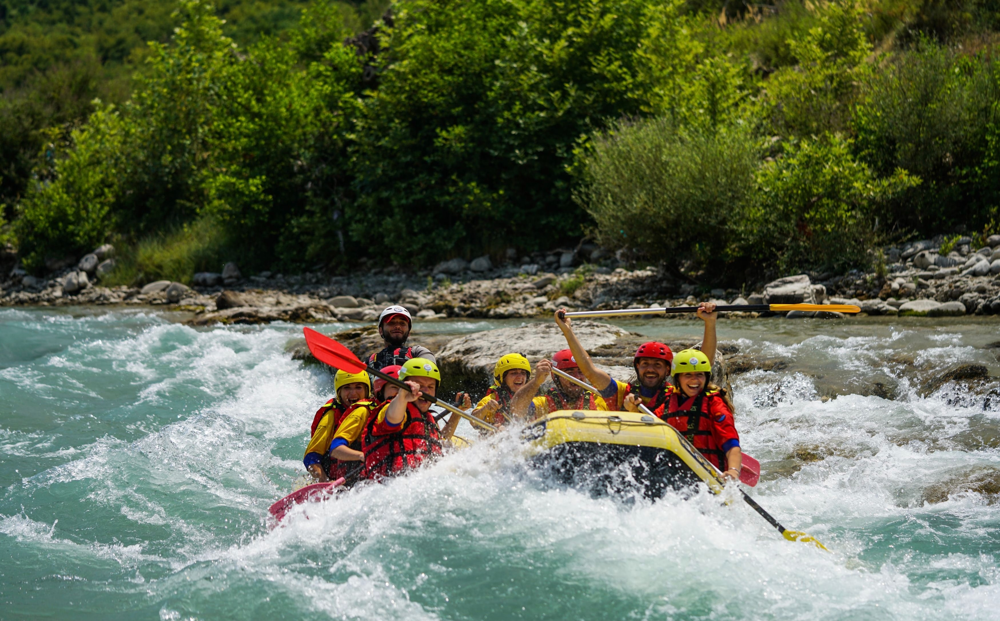
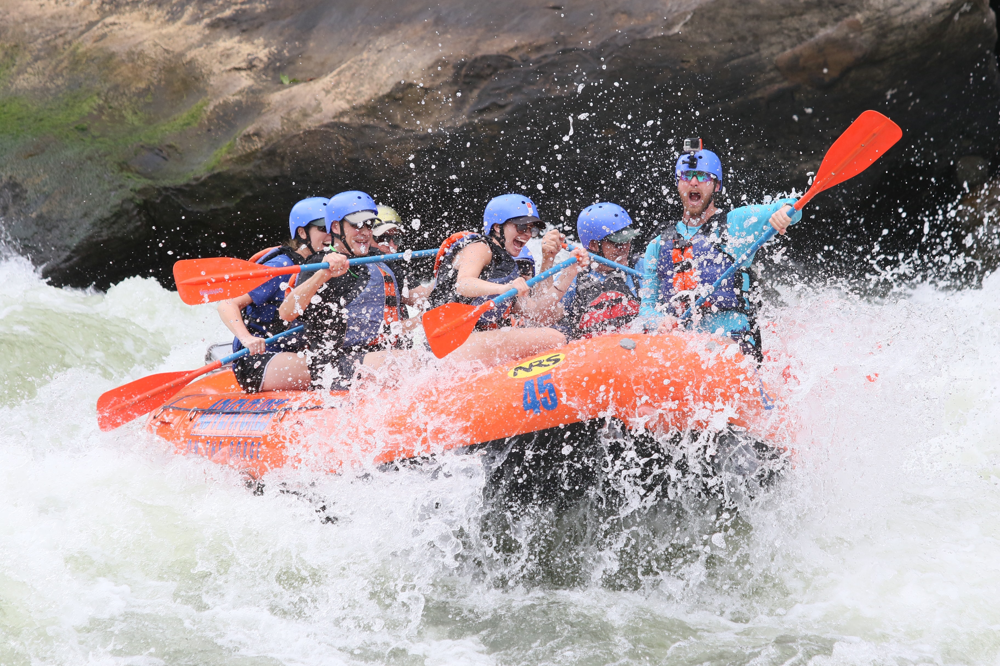
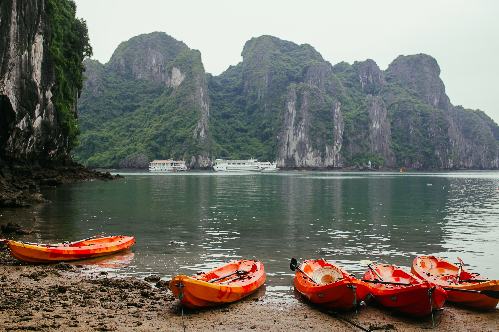
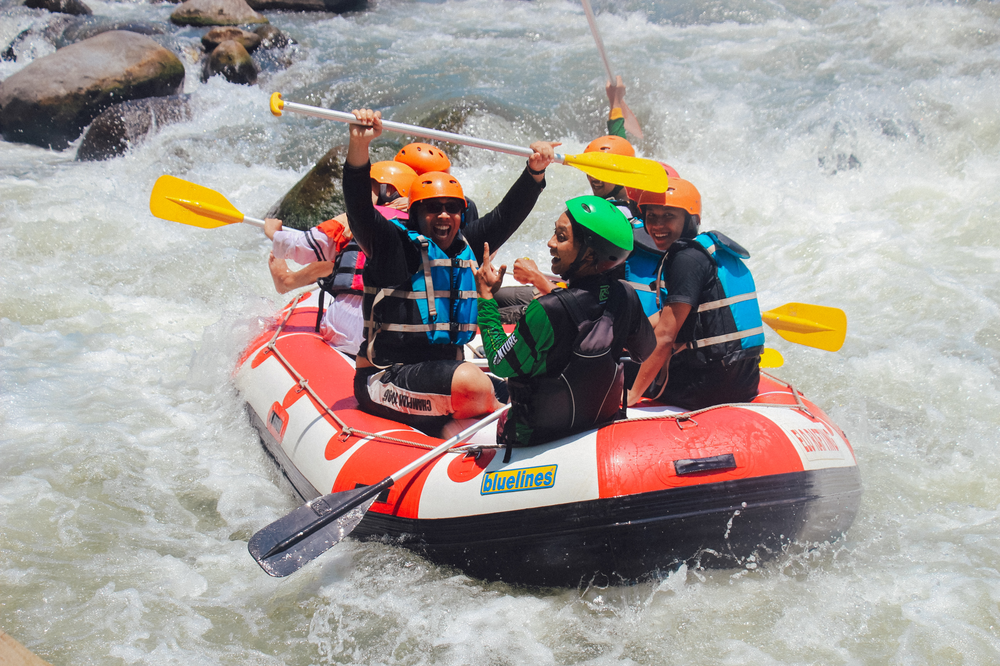
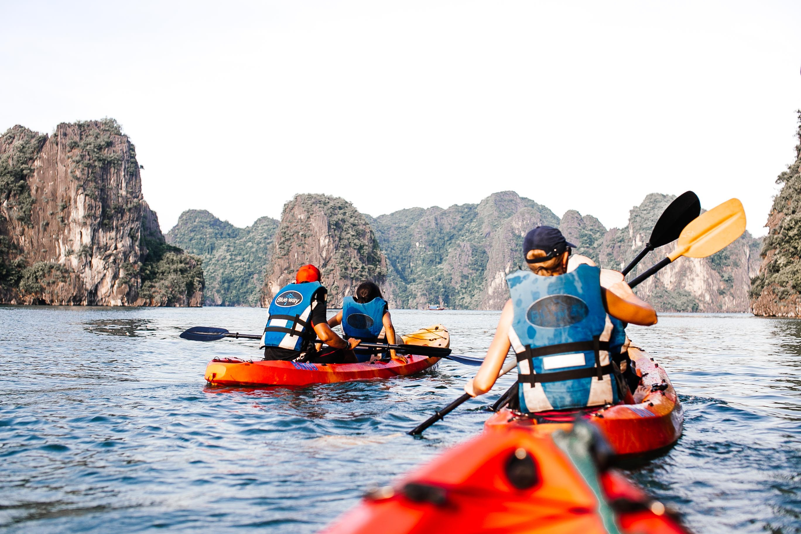

RIVER PEOPLE COMPANY
- 

- 
- 
Experience the better rafting in the world
WHICH ADVENTURE IS RIGHT FOR YOU?
CLASSIC RIVERS
Without any doubt these are the top classic river trips in the
world, indeed some of the top adventure trips in the world. They
offer a mixture of world-class white water, picturesque sandy
beaches, incredible culture, and a chance for afternoon
exploration. Every one of these places is unique due to the
fantastic white water,incredible surroundings and unique
cultures.Often these classic rafting vacations feature more days
on the river to allow you to truly explore the destination,unplug
from everyday life and truly relax.If you enjoy ticking off the
classic adventures that the world has to offer, then you must put
these on your list.

FAMILY RAFTING ADVENTURES

River trips aren’t just for big kids. We also have the ideal, safe
adventure for you and your family, with a range of destinations
depending on the age of your children. We will expose your
children to the fun of camping, the outdoors and give them an
insight into foreign cultures. Take a step away from tablets and
technology and see just how special a trip can be bonding on the
river. You’ll get a chance to relax as well as the kids naturally
gravitate towards the guides, helping them to rig boats and even
do dishes!
WE ARE YOU BEST OPTION
Our rafting trips aren’t just about fun, excitement and the
adventure of white water rafting. You will experience the best
white water rivers in the world (most scenic, most exciting, or
both) as well as “5 star” campsites (or we prefer to say “one
million stars”) delicious food accompanied by apres-rafting
drinks, and entertaining professional raft guides.